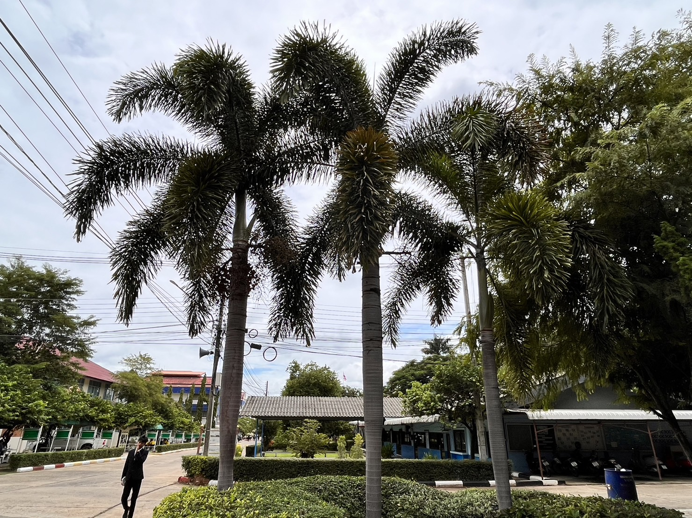
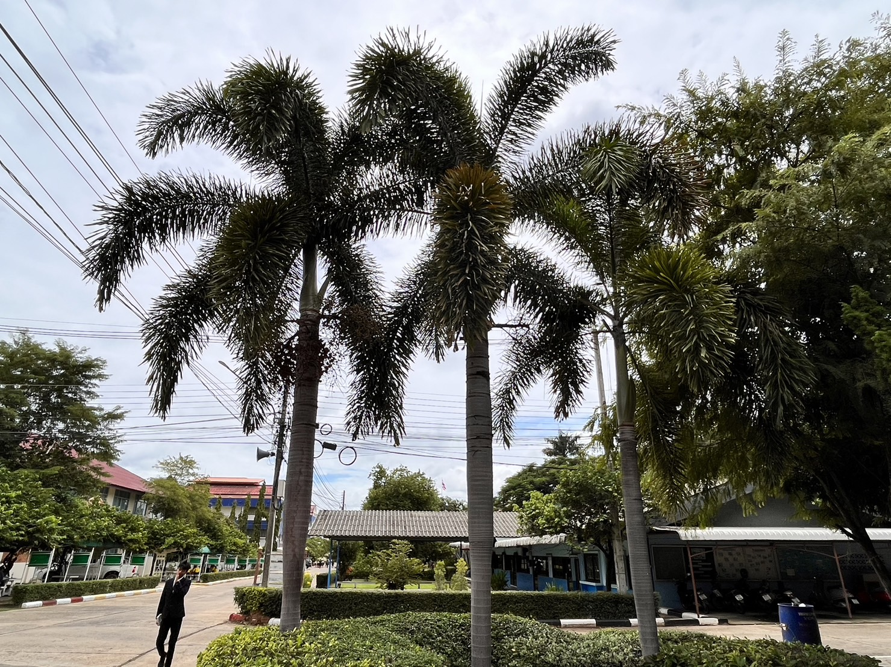

:ประโยชน์ของต้นหมาก
1.เมล็ดใช้เป็นยาถ่ายพยาธิในสัตว์ เช่น สุนัข ไก่ชน และแกะ ด้วยการนำผลแก่มาบดให้สัตว์กิน
2.ใช้กำจัดหนอน ในเวลาที่วัวหรือควายเป็นแผลมีหนอน จะทำให้หนอนตายหมด
3.ส่วนยอดอ่อนของลำต้นสามารถนำมารับประทานเป็นอาหารจำพวกผักได้ ส่วนจั่นหมากหรือดอกหมากเมื่อยังอ่อนอยู่ก็ใช้รับประทานเป็นอาหารได้เช่นกัน
4.ช่อดอกซึ่งมีกลิ่นหอมจะถูกนำมาใช้ในงานแต่งงานและงานศพ
5.ใบหมากหรือทางหมาก (รวมกาบ) มีประโยชน์อย่างมากต่อความเป็นอยู่ในชีวิตประจำวันของชาวสวน เพราะชาวสวนจะใช้ก้านทางที่มีใบมาผูกห้อยตรงช่องทางเข้าออกของซึ่งเป็นที่จับถ่ายของชาวสวน เพราะช่วยบังตาได้เป็นอย่างดี และชาวสวนยังใช้ทางหมากแห้งนำมาทำเป็นเสวียนขนาดใหญ่สำหรับรองรับกระทะใบบัวขนาดใหญ่ในขณะที่กวนน้ำตาลองุ่นให้เป็นน้ำตาลปี๊บอีกด้วย
6.กาบใบนำมาใช้ประโยชน์ในด้านการทำภาชนะ เครื่องจักสาน หรือวัสดุห่อหุ้มสิ่งของได้ ปลอกมีด ในสมัยก่อนเด็ก ๆ จะนำมาทำเป็นของเล่น คือ รถลาก โดยให้เด็กคนหนึ่งนั่งลงบนกาบใบ มือจับไว้ที่โคนทาง แล้วให้เด็กอีกคนหนึ่งจับที่ปลายทางส่วนที่เหลือใบไว้ แล้ววิ่งลากไป นอกจากนี้ยังสามารถนำมาดัดหรือเจียนทำเป็นเนียนสำหรับขูดน้ำพริกที่สากและคดน้ำพริกจากครก ซึ่งคุณสมบัติที่ดีมากของเนียนก็คือ ความนิ่งของกาบหมากนั่นเอง และกาบหมากยังสามารถนำมาทำเป็นที่จับกระทะเคี่ยวตาล เวลายกขึ้นยกลงจากเตาตาลแทนการใช้ผ้าได้อีกด้วย
7.กาบหมากยังสามารถนำมาใช้ทำพัดสำหรับพัดคลายร้อนในหน้าร้อนได้เป็นอย่างดี โดยนำกาบใบมาเจียนให้เป็นรูปวงกลมหรือรูปวงรี มีที่สำหรับมือจีบยื่นออกมา ซึ่งก่อนใช้จะต้องใช้ก้นของครกตำข้าวทับให้แบนเรียบเสียก่อน
8.เนื้อในเมล็ดสามารถนำมาใช้ในการผลิตสีย้อมผ้าได้
9.เปลือกผลสามารถนำมาใช้ทำเป็นเชื้อเพลิงได้
10.ลำต้นสามารถนำมาใช้ในการก่อสร้างได้ เช่น ใช้ทำสะพาน เฟอร์นิเจอร์ ทำเสาตอม่อ ฟากสับ แม่บันได ลูกบันได ส่วนโคนแก่ใช้ทำชั้นพะองเพื่อทอดทำสะพานข้ามกระโดง ท้องร่อง และเมื่อนำลำต้นมาทะลวงไส้ออก จะสามารถใช้เป็นท่อระบายน้ำได้ นอกจากนี้ยังใช้ทำไม้คานแบกของ ทำคร่าวสำหรับยึดฝาฟากสับ และยังใช้ต้นหมากนำมากั้นคันดินและทำเป็นตอม่อเพื่อป้องกันคันดินที่กั้นน้ำเข้าสวนพังได้อีกด้วย
11.ปัจจุบันมีการปลูกต้นหมากไว้เป็นไม้ประดับทั่วไป เนื่องจากมีลำต้นและทรงพุ่มที่ดูสวยงาม
12.ชาวไทยนิยมกินหมากร่วมกับพลูและปูนแดง โดยมากจะเอาใบพลูที่ไม่แก่หรืออ่อนจนเกินไปมาทาด้วยปูนแดง แล้วใช้กินกับหมากที่หั่นเป็นชิ้นเล็ก ๆ เคี้ยวด้วยกัน ก็จะมีน้ำหมากสีแดง ซึ่งจะต้องบ้วนทิ้ง (การกินหมากจะทำให้ฟันดำและปากแดง เมื่อเคี้ยวติดต่อกันหลายปีฟันจะเปลี่ยนเป็นสีดำ) ในสมัยก่อนชาวไทยทั้งชายและหญิงตั้งแต่วัยรุ่นจนถึงวัยชราก็ล้วนแต่กินหมากกันทั้งสิ้น และการเคี้ยวหมากหลังการรับประทานอาหาร จะช่วยทำให้ลมหายใจหอมสดชื่น ช่วยดับกลิ่นปาก แก้แมงกินฟัน ช่วยทำให้เหงือกแข็งแรง และช่วยกระตุ้นการทำงานของต่อมน้ำลาย กระตุ้นการสร้างน้ำย่อยในกระเพาะอาหาร ทำให้มีการย่อยอาหารที่ดีขึ้น และยังช่วยเพิ่มความอยากอาหารได้อีกด้วย (แต่หมากบางต้นเมื่อนำมากินแล้วจะทำให้เกิดอาการวิงเวียน ใจสั่น และขับเหงื่อ เรียกว่า “หมากยัน”)
13.ในยุโรปมีการใช้ผลหมากเป็นส่วนผสมของยาสีฟัน เพราะเชื่อว่าจะทำให้ฟันขาวขึ้นได้
14.เมื่อการกินหมากกลายเป็นธรรมอย่างหนึ่ง จึงทำให้เกิดการพัฒนาไปสู่วัฒนธรรมหมากอย่างจริงจัง นั่นก็คือ การใช้หมากเป็นเครื่องต้อนรับแขก (แต่ในปัจจุบันคนไทยกินหมากน้อยลงมาก), การนำมาใช้ในพิธีทางศาสนา (เช่น พิธีกรานกฐินเมื่อออกพรรษา), ใช้หมากในพิธีไหว้ครูและพิธีบายศรีสูขวัญ หรือนำมาจัดเป็นหมากพลูไว้เป็นชุดขายเพื่อนำไปเป็นเครื่องบูชาสิ่งศักดิ์สิทธิ์ต่าง ๆ ส่วนในต่างประเทศอย่างมาเลเซียจะมีประเพณีที่ว่า หากฝ่ายหญิงเคี้ยวหมากไปพร้อม ๆ กับฝ่าย นั่นแสดงว่าเธอยินดีที่จะเป็นคู่ครอง ส่วนคนจีนไหหลำจะเชื่อว่า เจ้าสาวที่จะมาไหว้ว่าที่แม่สามีจะต้องนำหมากพลูมากไหว้ ส่วนคนญวนจะมีประเพณีที่ว่าคู่บ่าวสาวจะต้องกินหมาก 120 คำให้หมด ถึงจะแต่งงานกันได้ ส่วนคนพม่านั้นถือว่า สาวใดยื่นหมากให้ฝ่ายชาย นั่นหมายถึงเธอกำลังทอดสะพานให้แก่ฝ่ายชาย เป็นต้น
15.คุณค่าทางโภชนาการของผลหมากสุกที่ยังสดต่อ 100 กรัม ประกอบไปด้วยน้ำ 21-30 กรัม, คาร์โบไฮเดรต 35-40 กรัม, ไขมัน 5-10 กรัม, ใยอาหาร 11-15 กรัม, โพลีฟีนอล 11-18 กรัม มีสารประกอบอัลคาลอยด์ 0.1-0.2%[7] ในด้านการนำมาใช้ทางอุตสาหกรรม ผลหมากเมื่อนำมาสกัดจะได้ไขมัน เมือก ยาง และสาร Arecoline ซึ่งมีสารแทนนินสูง จึงสามารถนำมาใช้ในทางอุตสาหกรรมได้หลายชนิด เช่น การใช้ทำสีต่าง ๆ ใช้ย้อมแห อวน ทำให้แหหรืออวนนิ่มอ่อนตัว เส้นด้ายไม่เปื่อยเร็ว ช่วยยืดอายุการใช้งานได้นานขึ้น และยังใช้สกัดเป็นน้ำยาฟอกหนัง ทำให้หนังนิ่มมีสีสวย หรือใช้สกัดทำเป็นยารักษาโรค เช่น ยาขับพยาธิในสัตว์ ยาแก้ท้องเสีย ท้องเดิน ยาขับปัสสาวะ ยาสมานแผล ยาขับพิษ ยาทาแก้คัน น้ำมันนวด และยาแก้ปากเปื่อย เป็นต้น
16.หมากเป็นพืชที่มีความเกี่ยวข้องกับวัฒนธรรมประเพณีพื้นบ้านความเป็นอยู่ของคนไทยในอดีต เพราะคนไทยนิยมกินหมากตั้งแต่เจ้านายถึงชาวบ้านคนธรรมดา แต่ในปัจจุบันคนนิยมกินหมากลดน้อยลงมาก หมากจึงมีบทบาทในแง่ทางอุตสาหกรรมมากกว่า เพราะมีการส่งออกเพื่อจำหน่ายต่างประเทศคิดเป็นมูลค่าหลายร้อยล้านบาทต่อปี หมากจึงเป็นพืชเศรษฐกิจที่น่าสนใจอย่างหนึ่ง เนื่องจากเป็นพืชที่เพาะปลูกง่าย ดูแลรักษาไม่ยาก โรคและแมลงรบกวนน้อย การลงทุนไม่สูงนัก สามารถทำรายได้อย่างสม่ำเสมอเป็นเวลานานนับสิบปี
 
